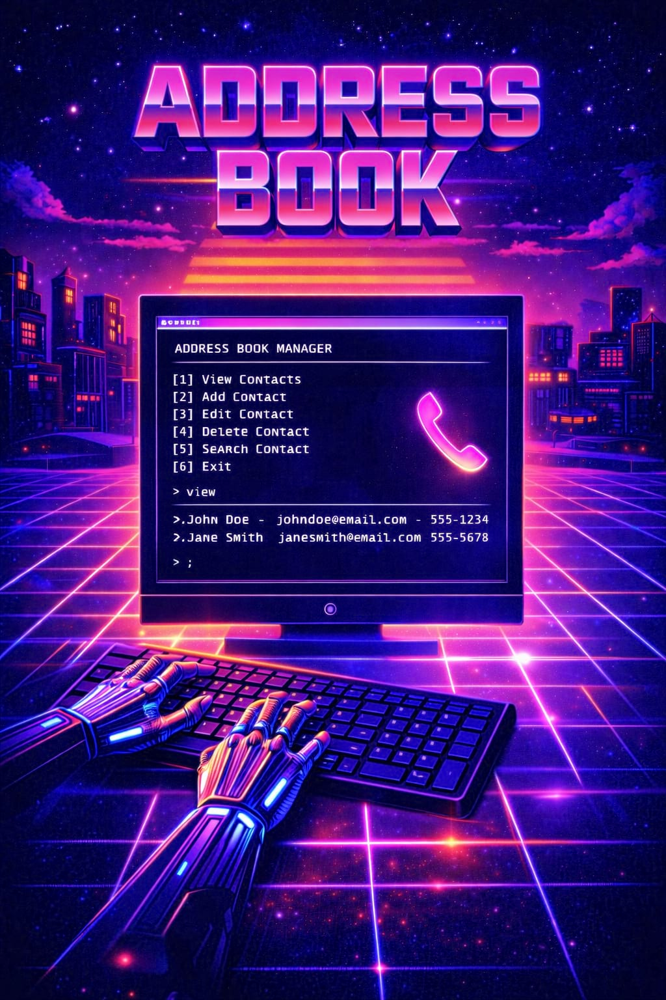
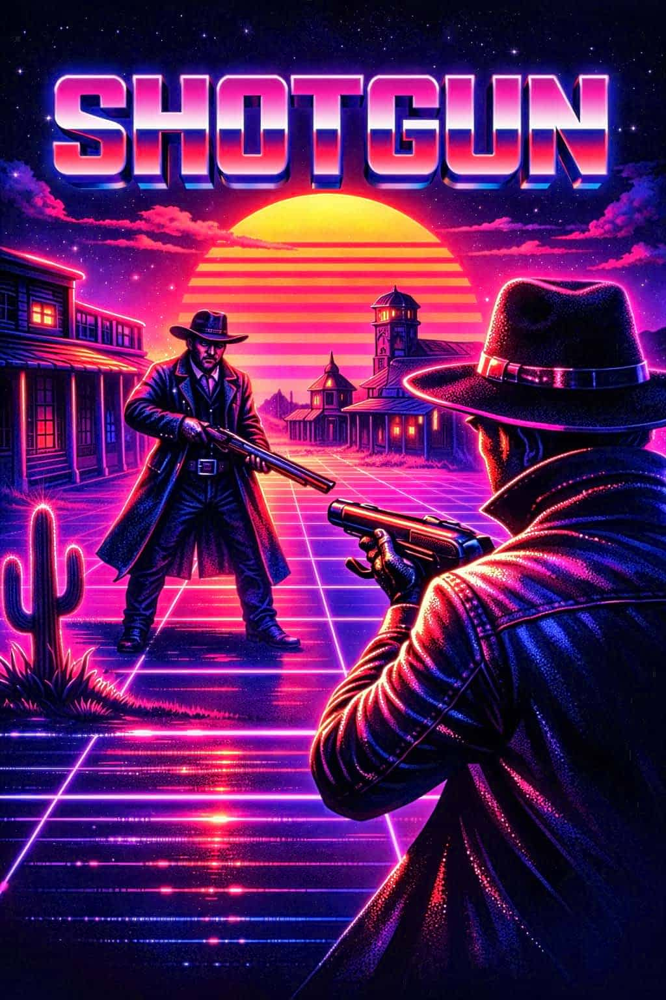

Portfolio
Projekt

Addressbook
Object-oriented C# console application for managing contacts with CRUD operations and search functionality. Implemented file handling for data persistence. Focus on structure, user flow, and data management.
Objektorienterad konsolapplikation i C# för hantering av kontakter med stöd för CRUD och sökfunktionalitet. Implementerade filhantering för att lagra och hämta data från textfil. Fokus på struktur, användarflöde och datalagring.

Shotgun
Developed an object-oriented C# game where the player faces a randomized AI opponent. Implemented game logic, state handling, and resource rules. Focus on clean structure and logic.
Utvecklade ett objektorienterat spel i C# där spelaren möter en dator med slumpmässiga val. Implementerade spellogik, tillståndshantering och regler för resurser. Fokus på kodstruktur och logik.

ZooSAL
Built a responsive website using HTML and CSS. Implemented form validation, tables, and integration with an external web service and Google Maps. Focus on layout and user interaction.
Byggde en responsiv webbsida med HTML och CSS. Implementerade formulär med validering, tabeller samt integration mot extern webbtjänst och Google Maps. Fokus på layout och användarinteraktion.
WepAPI Blog
Developed a REST API using ASP.NET and Entity Framework for managing users, posts, and categories. Implemented authentication, CRUD operations, testing with Postman, and documentation with Swagger.
Utvecklade ett REST API med ASP.NET och Entity Framework för hantering av användare, inlägg och kategorier. Implementerade autentisering, CRUD och testning via Postman samt dokumentation med Swagger.